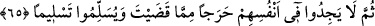

“Biz her peygamberi Allah’ın izniyle ancak kendisine itâat edilmesi için
gönderdik.” Allah, bütün peygamberleri kendilerine itâat edilmesi ve getirdiklerine
uyulması için göndermiştir. Çünkü peygamber getirdiğini Allah’tan getirmektedir.
Dolayısıyla ona itâat etmek, Allah’a itâat etmek; ona karşı gelmek, Allah’a karşı gelmek
demektir.
“Eğer onlar” sana itâat etmeyi bırakıp senden başkasının hakemliğine başvurarak
“kendilerine zulmettikleri,” kendilerini azapla karşı karşıya bıraktıkları “zaman”
nifâktan tevbe ederek “sana gelseler de” tevbe ve ihlasla “Allah’tan bağışlanmayı
dileseler, Rasûl de” tevbe ettikleri zaman Allah’tan onları bağışlamasını dileseydi
“onlar için istiğfar etseydi Allah’ı ziyâdesiyle affedici” tevbeleri çok kabul buyurucu,
“esirgeyici” rahmeti ile kendilerine çok ihsân edici olarak “bulurlardı.”
Eğer, “Sahih bir şekilde tevbe etmeleri durumunda tevbeleri zaten kabul edilecektir.
Öyle ise onların tevbesine bir de peygamberin istiğfârını eklemenin faydası nedir?”
dersen, derim ki: Tâğûtun hakemliğine başvurmak, Allah’ın hükmüne karşı gelmek
olduğu gibi Hz. Peygamber (a.s)’a karşı bir edepsizlik ve kalbini gamlandıracak bir
davranıştır. Dolayısıyla günahı böyle olan birinin ondan da özür dilemesi gerekir.”
65- Hayır, Rabbine andolsun ki aralarında çıkan anlaşmazlık husûsunda seni
hakem kılıp sonra da verdiğin hükümden içlerinde hiç bir sıkıntı duymaksızın tam
mânâsıyla kabullenmedikçe îmân etmiş olmazlar.
“Hayır” senin hükmüne karşı geldikleri halde, îmân ettiklerini iddiâ etmeleri doğru
bir iş değildir. “Rabb’ine andolsun ki aralarında çıkan anlaşmazlık husûsunda”
aralarında baş gösterip dallanıp budaklanan anlaşmazlıklarda “seni hakem kılıp” sana
mürâcaat edip “sonra da verdiğin hükümden içlerinde hiçbir sıkıntı” darlanma
“duymaksızın” hükmüne râzı olarak, gönülleri daralmadan “tam mânâsıyla
kabullenmedikçe” sana hem içleriyle hem dışlarıyla boyun eğmedikçe “îmân etmiş
olmazlar.”
Bu âyetlerde, Allah Teâlâ’nın ya da Peygamber (s.a.v.)’in emirlerinden birini
reddeden kişinin İslâm’dan çıkmış olacağını gösteren deliller vardır. Bu red, ister şüphe
ister karşı koyma cihetinden olsun farketmez. Bu, sahabîlerin zekât vermeyi inkâr edip
reddedenlerin mürted oldukları, onlarla savaşılacağı şeklindeki görüşünün doğru
olmasını gerektirir. Şu halde, Hz. Peygamber (a.s)’a uymak farz-ı aynlarda farz-ı ayn,
farz-ı kifâyelerde farz-ı kifaye, vâciplerde vâcip; sünnetlerde ise sünnettir. Kezâ ona
karşı gelmek ise İslâm nimetini ortadan kaldırır.